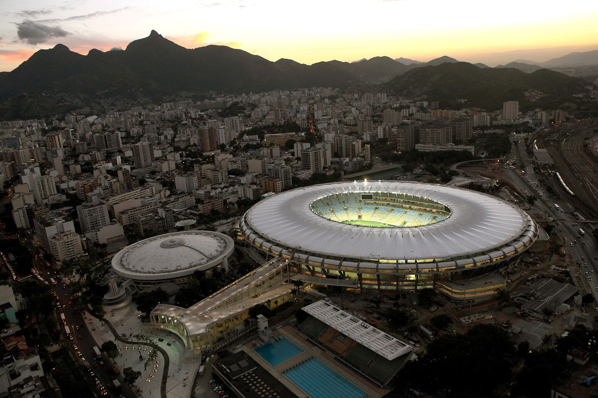

Навигация по сайту:
Главная страница |
Подробнее о Маракане |
Список стадионов (Таблица)
Стадион Маракана (Рио-де-Жанейро, Бразилия)

История и рекорды стадиона
Маракана (порт. Maracanã) — первый по вместимости стадион Бразилии и в прошлом крупнейший в мире. Официальное название — «Жорналишта Мариу Филью». Был построен специально к чемпионату мира по футболу 1950 года.
Название «Маракана» происходит от названия небольшой речушки, протекающей неподалёку, а также от вида попугаев, обитавших в этих местах.
Ключевые исторические вехи:
- 16 июля 1950 года: Решающий матч чемпионата мира между сборными Бразилии и Уругвая (Мараканасо). На матче присутствовало рекордное количество зрителей — 199 854 человека.
- 19 июля 1992 года: Обрушение верхней трибуны, после которого последовала масштабная реконструкция и отмена стоячих мест.
- 2014 год: Стадион принял финал Чемпионата мира по футболу во второй раз в своей истории.
- 2016 год: Церемонии открытия и закрытия Летних Олимпийских игр.
- 2020 год: Стадион принял финал Кубка конфедераций.
- 2021 год: Стадион принял финал Кубка Америки.
Интересные факты о стадионе
- Стадион «Маракана» был построен в 1950 году и стал символом бразильского футбола.
- «Маракана» является домом для двух крупнейших футбольных клубов Бразилии — ФК «Фламенго» и ФК «Флуминенсе».
- Стадион принимал финалы чемпионатов мира по футболу в 1950 и 2014 годах.
- «Маракана» в Рио-де-Жанейро был реконструирован к чемпионату мира по футболу 2014 года и может вместить более 78 000 зрителей.
Архитектура и инфраструктура
- Форма: Овальная, что обеспечивает отличную видимость с любой точки.
- Крыша: После реконструкции 2013 года стадион получил новую крышу из стекловолокна, покрытую тефлоном.
- Текущая вместимость: 78 838 зрителей (исключительно сидячие места).
- Система климат-контроля: Обновленная система климат-контроля обеспечивает комфортные условия для зрителей и спортсменов.
- Транспортная инфраструктура: Стадион хорошо связан с городской транспортной сетью, что облегчает доступ для зрителей.
Выполнила: Рагулина Диана Сергеевна, Группа: Б9124-09.03.04(4)